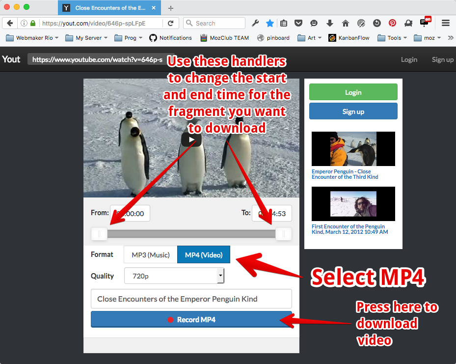
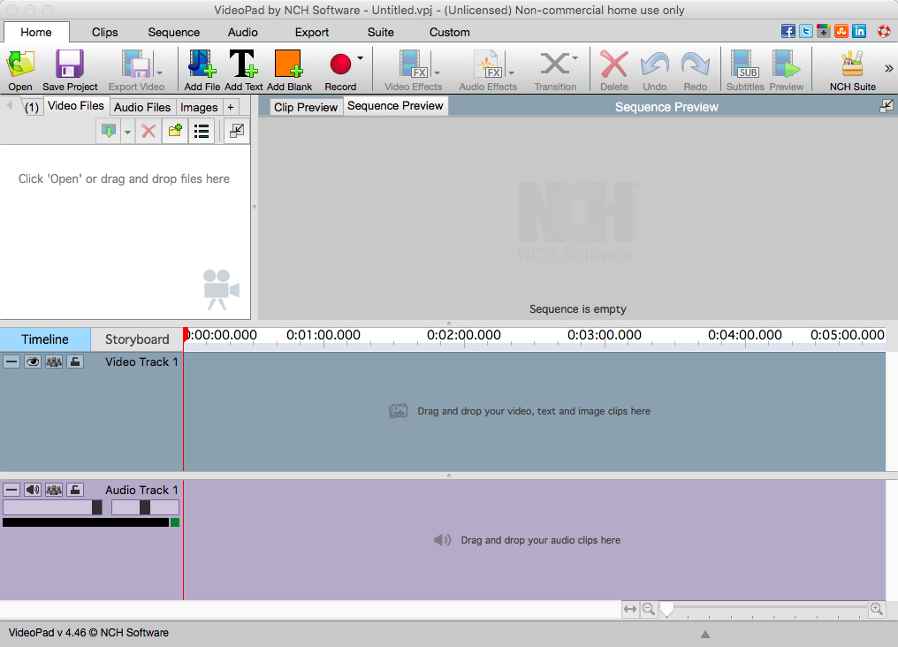
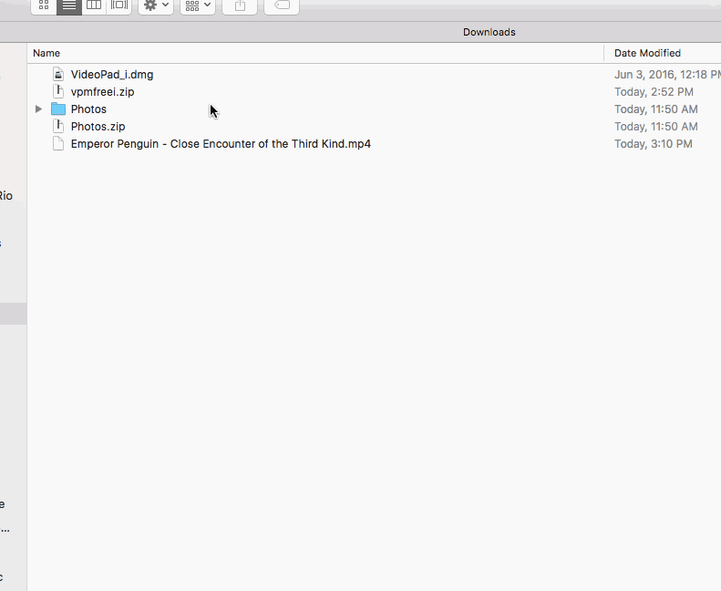
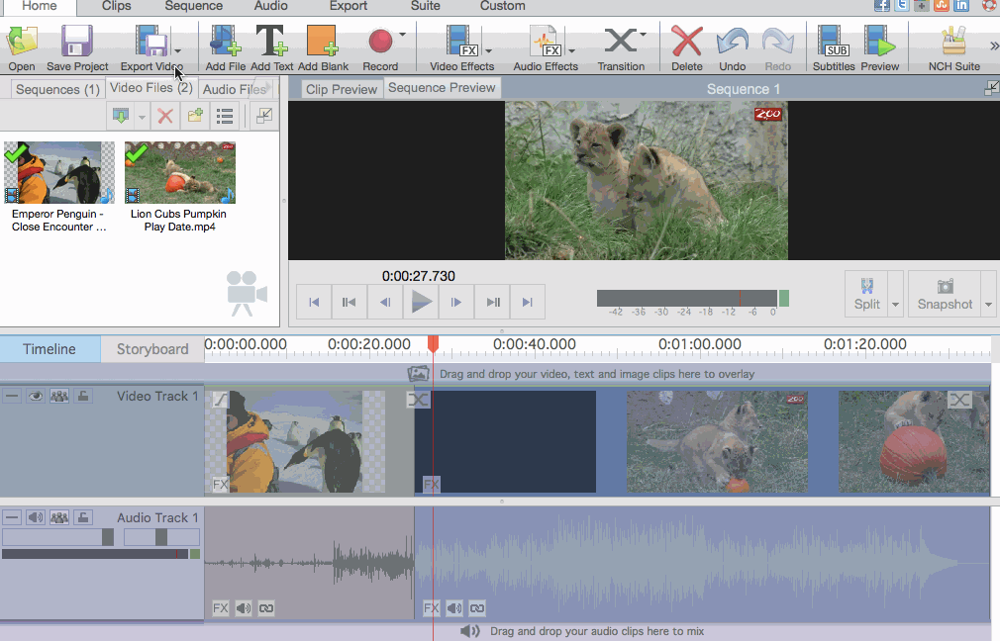

VideoLogger Curriculum | Movie Remixing
Made by Rio Mozilla Club
60 minutes
Learning movie editing by having fun with movie mashups and remixes.
21st Century Skills
- Communication
- Creativity
- Remix
Learning Objectives
- Understanding the basics of movie editing.
- Learning how to combine different movies into a narrative.
- Create your own movie mashup.
Audience
- 13+
- Creative people with an interest in movies, memes or animated GIFs
Materials
- Internect-connected computers
- Internet Browser
- Movie Editing Software
-
1. Preparation
Work through all the content from today's activity to get a feel for how each of its parts work together. Review this lesson plan, as well, to make sure you're comfortable facilitating it.
Be sure to test your technology and Internet connectivity because a large chunk of this activity depend on the learners being able to browse youtube and meme sites.
Distribute markers, sticky notes and paper to all your learners so that they have tools to brainstorm the next exercises and activities.
Introduction
Before the learners can effectively enjoy this activity, you must explain to them what movie mashups are. This is best done by combining an verbal explanation with examples from the net.
Movie mashups or supercuts as they are sometimes called are a popular meme type on the Web. They are short videos or animated GIFs that combine parts of different movies or videos into a funny scene.
As an example, you can show them:
-
2. Checking out movie mashups
15 minutesAfter explaining about mashups and showing your learners a couple examples. Ask them to go to giphy.com and search for mashups. Tell them to select their favorite one and leave it open in their computer. Then do a gallery walk with the whole group checking out each others selection.
This ice-breaker works best if you give them enough time to check out funny examples. The more time you invest here, the more engaged they become with the overall idea of remixing movies.
This activity will not only set the tone for the rest of the meeting but will get their creativity up. When doing the gallery walk, give them enough time to talk among themselves and have fun.
Tip: When searching giphy or any other animated GIF site for mashups use tags such as #mashup, #supercut and #combined.
-
3. Downloading movie parts
15 minutesAdvise to facilitators
It is easier to use ready made footage than to shoot your own material, that is one of the reasons why we're doing movie mashup remixing instead of movie shooting and editing. Be aware that copyright rule and fair usage varies from country to country, here in Brazil we're allowed to use about 30 seconds of movie footage without hard in an non-commercial context and that is what we'll be doing.
In this part of the activity, we'll use readily available tools to extract movies fragments from youTube. These parts will later be combined into a single movie in the next part of the activity. There are other tools to extract movies from youTube besides the one we'll be using here including some browser extensions if you want to go through that route.
Getting to know the 'yout' webapp
The tool we selected for this part is called Yout and is very easy to use. Get to learn how to use it well before showing it to your learners. Lets do a hands on example of using that tool:
- Open this penguin video. (This is a video that we can use for our remixing purposes for it is licensed with creative commons).
- Delete the letters 'u', 'b' and 'e' from that URL so that https://www.youtube.com/watch?v=646p-spLFpE becomes https://www.yout.com/watch?v=646p-spLFpE and reload the page.
- You are now at Yout main interface that looks like this: 
- As shown in the screenshot above, use the handlers to adjust the start and end time of the fragment you want to download. This way you will only pick the part of the video you actually want instead of downloading the whole video. Remember to select MP4 instead of MP3 which is used to download music.
- After pressing the Record MP4 button and saving the file, you'll have your fragment ready on your computer.
Activity with learners
Show them how the Yout webapp works. After that, tell them to:
Go on youtube and find out fragments of movies to combine together like the mashups you saw earlier today! Try to pick at least three fragments from different movies.
Help them lookout for great scenes to combine together. The best scenes for this type of tasks are action oriented where you interrupt the action in the middle and then download a fragment from another movie that completes the action such as the GIF in the top-right corner of this webpage.
-
4. Mashing them up
25 minutesYour learners should each have at least three movie fragments to combine at this point but before we do so, lets talk a bit about non-linear movie editing software.
Advise for the facilitators
Movie editing is easy to begin with and hard to master, much like all kinds of artistic expression. What we'll cover here is the most basic kind of editing which is combining footage. If you devote some time to explore the editing software further, beyond what we'll show here, you will have more tips and tricks to show your learners as they make their own movie.
We had to select a software for editing movies for this activity. Due to the requirements of our project we decided that our selected application needed to be FREE for non-commercial usage and preferably Open Source. After going through a dozen different apps, two stood out for us:
Both are cross-platform and work on multiple operating systems. For the rest of the activity we'll use VideoPad but these instructions work just the same on Shotcut and on other editors. If you are downloading VideoPad, remember to select the download link that says "FREE for non-commercial use".No matter what software you end up using, it is a good idea to have it installed on the computers the learners will use before the event starts.
Getting to know VideoPad

Yes, video editing software appear very complex but to accomplish our tasks it will be quite easy. We'll divide them into discreet steps that you should practice first before showing your learners.
Importing footage
The first task is to import your movie fragments. The easiest way to do that is to Drag and Drop them into the top-left region where it says Click 'open' or drag and drop files here. Once your files are imported into the program, we can work on them.

Combining footage
With all your fragments imported, you're ready to start combining them. The bottom part of the videopad interface is what is called a timeline editor/viewer. You edit your movie by arranging your fragments in this region of the app.
Initially there are two tracks in there: Video Track 1 and Audio Track 1. You can have more tracks as needed. When you Drag and Drop your fragments onto the timeline, you fill both the video track and the audio track with content.
The objective for this part is to pick the fragments from the imported bin area, drag and drop them into the timeline and arrange them there as can be seen below:

Exporting your video
Once your mashup is done, you're ready to export the video. To do that, click on the Export video button and follow the instructions.

Be aware that exporting video takes a long time, specially on underpowered computers. To learn more about VideoPad software check out their official tutorials at YouTube.
Activity with learners
Use the VideoPad editor to import, combine and export their mashups. Show them how to import their footage and how to use the timeline. Check their videos before exporting since that operation is very time consuming.
If any of your learners shows a talent for video editing and finishes this activity way faster than the others, invite them to help you and become ad-hoc facilitators helping the rest of the team. Hands-on helping on this activity is very beneficial for learners.
Once they all have their movie mashups ready, you can invite them to share their creations on social networks or even convert them to GIFs with tools such as Imgur Vidgif.
-
5. Reflection and Assessment
5 minutesFinally, facilitate a brief, reflective discussion about the day's learning using prompts like these - or make your own!
- In your own words, can you describe what you like about mashups?
- As a videologger how could you use what you learned today to make your channel more interesting?
- How can movie editing help your own creations?
- What makes a great mashup?
- Was it difficult to create your mashup?
- How would you improve this lesson?
You can record learners' responses for the purpose of assessment, as well, but be sure to do so in a way that doesn't disadvantage those who struggle with composing in any particular medium. For example, be ready to record spoken answers, as well as to read typed or written responses.
Next --> Channel Ideation!